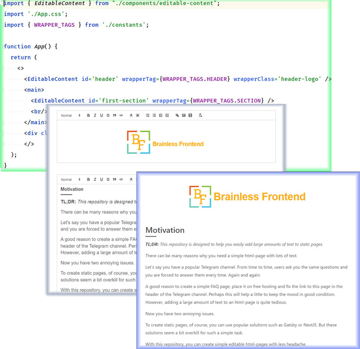

Brainless Frontend
Motivation
TL;DR: This application is designed to help you easily add large amounts of text to static pages.
There can be many reasons why you need a simple html-page with lots of text.
Let's say you have a popular Telegram channel. From time to time, users ask you the same questions and you are forced to answer them every time. Again and again.
A good reason to create a simple FAQ page, place it on free hosting and fix the link to this page in the header of the Telegram channel. Perhaps this will help a little to keep the mood in good condition. However, adding a large amount of text to an html-page is quite tedious.
Now you have two annoying issues 🙄.
To create static pages, of course, you can use popular solutions such as Gatsby or NextJS. But these solutions seem a bit overkill for such a simple task.
With this repository, you can create simple editable html-pages with less headache.

How to use
- Clone repo
- Install dependencies
npm i
- Edit file 'client/public/index.html' to update the title, description and so on
- Edit styles 'client/src/App.css'
- Edit file 'client/src/App.js' to add the actual layout
- In all places where you need editable content, you should add a component:
<EditableContent id='an-unique-identifier' />
This component has a unique required prop 'id' and two optional props: wrapperTag (please find supported tags in the WRAPPER_TAGS constant) and wrapperClass .
This is the end of the development process.
Add/edit content
- Run to open editable version locally
npm start
- Add content the same way as on any text editor
- Run to prepare final static version (path 'client/build/')
npm run build
Configure the deployment process if needed. I use Github Pages as hosting for this project. To build and deploy I have created an additional script to package.json file:
"deploy": "npm run build && gh-pages -d client/build"
If you have to include an additional javascript file please do it at the end of 'client/public/index.html' file with the required CSS class 'userscript'.
<script src="%PUBLIC_URL%/static/js/userscript.js" class="userscript"></script>
That's it!
Disclaimer
This application does not use Typescript, tests or linters. These things save a lot of time on large projects, but this is clearly too much for a static site for a couple of pages.
If for some reason, you need them, then you can easily set up them yourself. But in this case, I would recommend you consider frameworks such as Gatsby and NextJs.